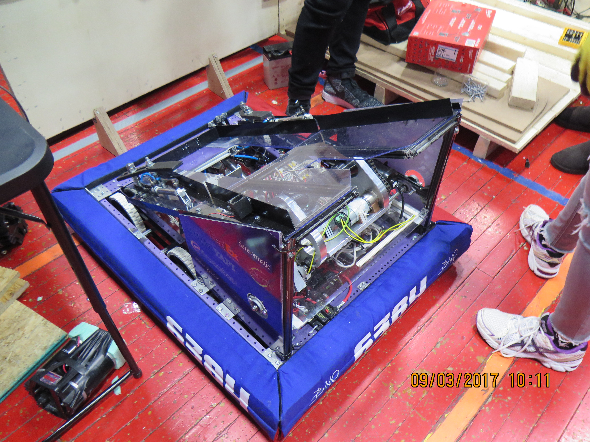
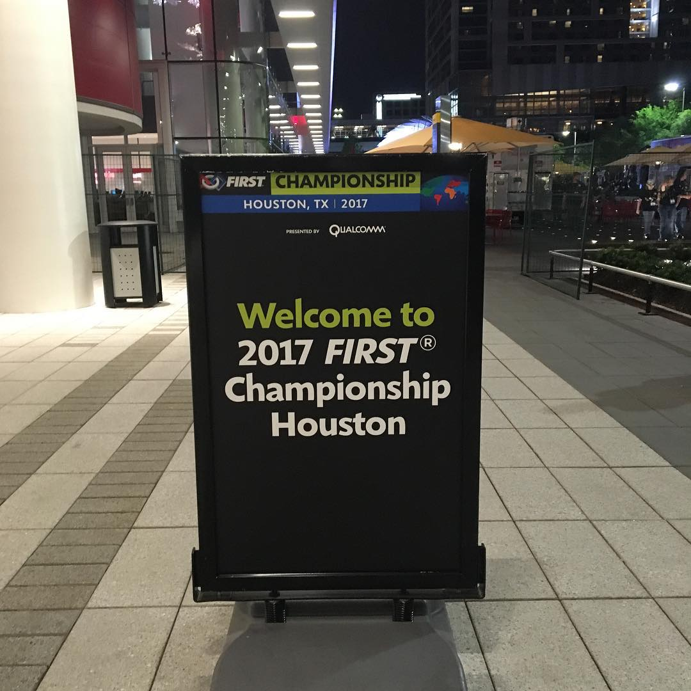
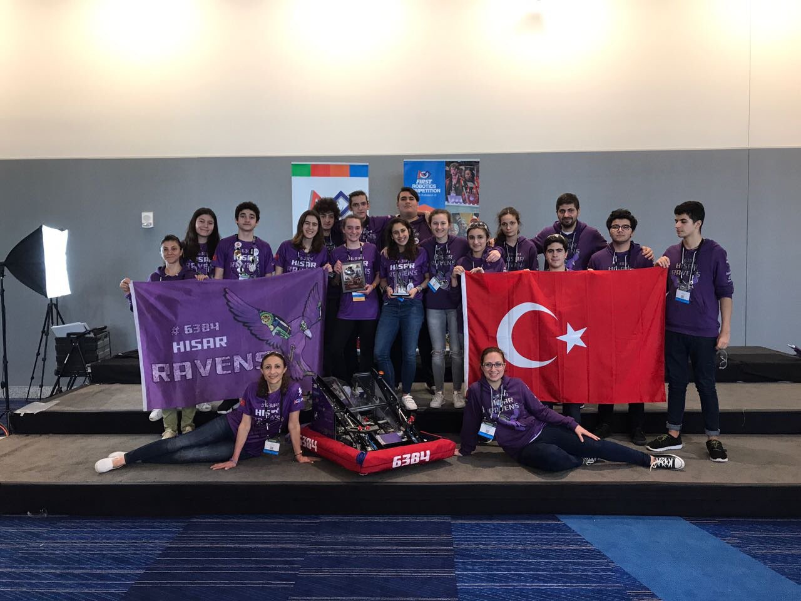
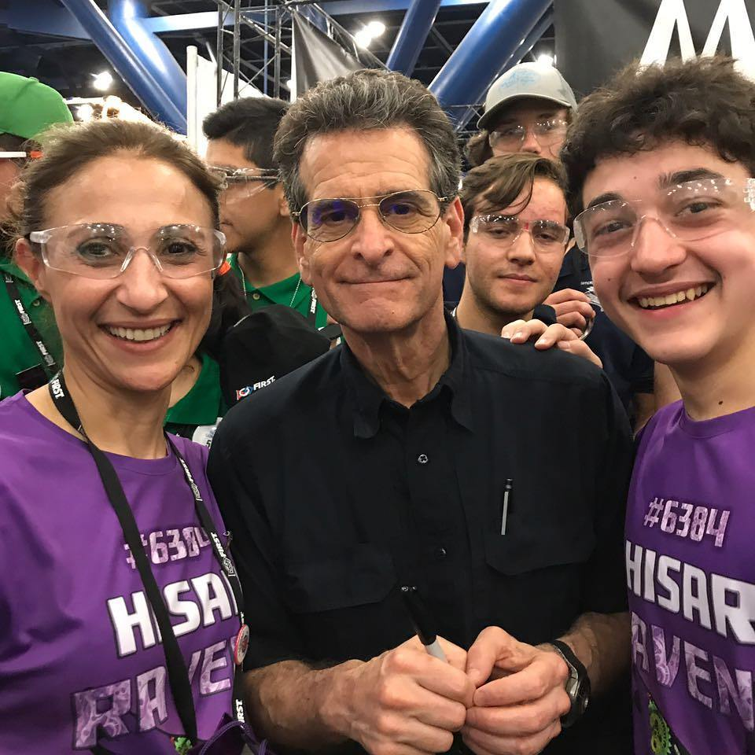
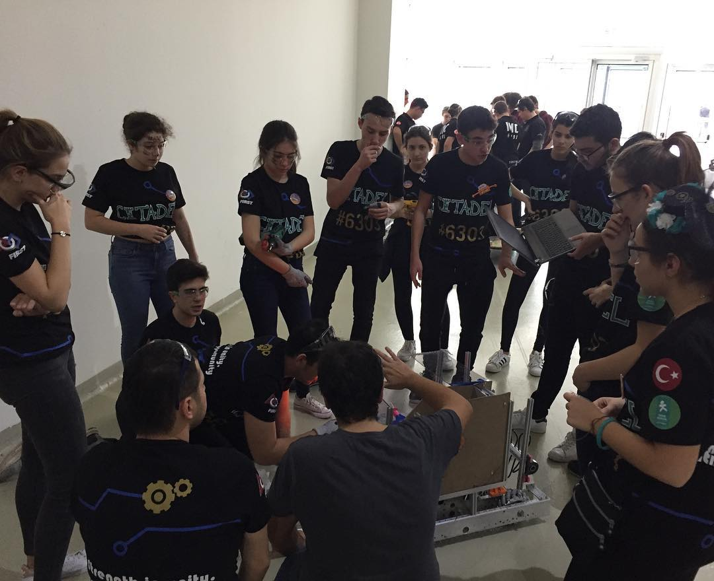
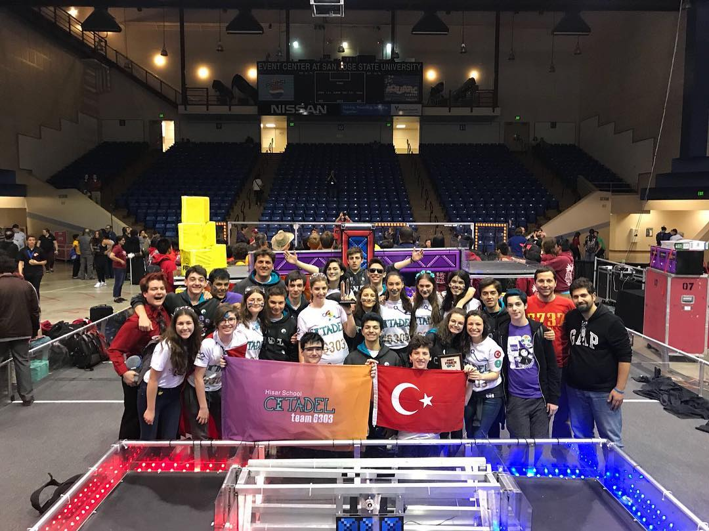
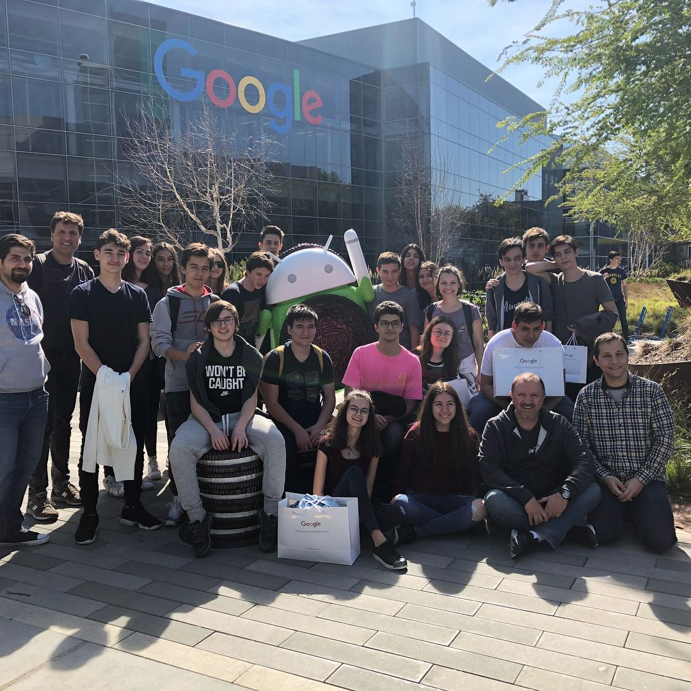

FRC is a robotics competition where teams have to design, prototype, build and optimize a ~100 pound robot in six weeks. The objectives that these robots are tasked with are mixed up every year, but usually involve launching projectiles into baskets, climbing a rope / slope, stacking boxes or tasks similar in nature. The teams are usually funded by seeking out sponsorships.
I was introduced to FRC in 2016, when I joined the team HisaRobotics. I shadowed our then current programmer while learning the tools (LabView, Java on the programming end, Flash, Maya, After Effects on the animation end). I started writing code for the main robot around the start of 2017, responsible for I/O from the joystick and the implementation of the gyro sensor. This was also around the time we rebranded to become Hisar Ravens.
In March of 2017, we went to our first regional event in Miami Valley, Ohio, thanks to some key sponsors. Here was our robot:

“The Ravenous” had the capability of receiving and placing gears and climbing on a rope, the two most point-efficient objectives in 2017. After three days of competition, we received the “Highest Rookie Seed Award” and also the “Rookie All Star Award”, the latter granting us a spot at the Houston World Championship. For the world championships, we had another six weeks to prepare, so we had some mechanical improvements to our robot. More importantly, we also added an autonomous pathfinder using computer vision, where I’ve written the edge and object detection logic using OpenCV and Python, and communicating the calculated trajectory the robot has to take to reach said object using Java, which served as a connection between our camera and our drivetrain.
Here are some pictures from the championship in Houston:


Here is the Safety Animation which was created using Autodesk Maya:
I also got to meet Dean Kamen, the founder of FIRST, here’s a cool picture from that day:

We went there to have fun, but quite unexpectedly, we came back with another “Rookie All Star Award”, and we were actually the first team in Turkey to receive that award. This put us at one of the six top rookie teams in the world (since there were 6 Rookie All Star Awards in six divisions).
Afterwards, our team merged with another team, rebranded as Team Citadel, and we kept on going in 2018, first with the Istanbul Regional event, and then with the Silicon Valley Regional event, where we first won the regional grant of $5k in Istanbul, and then the Imagery Award for robot and team design in Silicon Valley.


